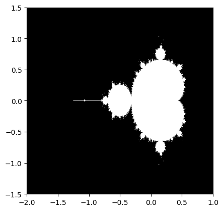

Here, I compute the mendelbrot set. Source: https://scipy-lectures.org/intro/numpy/auto_examples/plot_mandelbrot.html
import numpy as np
import matplotlib.pyplot as plt
from numpy import newaxis
def compute_mandelbrot(N_max, some_threshold, nx, ny):
# A grid of c-values
x = np.linspace(-3, 1, nx)
y = np.linspace(-1.5, 1.5, ny)
c = x[:,newaxis] + 1j*y[newaxis,:]
# Mandelbrot iteration
z = c
for j in range(N_max):
z = z**2 + c
mandelbrot_set = (abs(z) < some_threshold)
return mandelbrot_set
mandelbrot_set = compute_mandelbrot(50, 50., 601, 401)
plt.imshow(mandelbrot_set.T, extent=[-2, 1, -1.5, 1.5])
plt.gray()
plt.show()
Console output (1/2):
/var/folders/_w/fmxgjrxn3d7c7y4jpy6r65d00000gn/T/ipykernel_39706/3854838847.py:16: RuntimeWarning: overflow encountered in square
z = z**2 + c
/var/folders/_w/fmxgjrxn3d7c7y4jpy6r65d00000gn/T/ipykernel_39706/3854838847.py:16: RuntimeWarning: invalid value encountered in square
z = z**2 + c
Console output (2/2):
